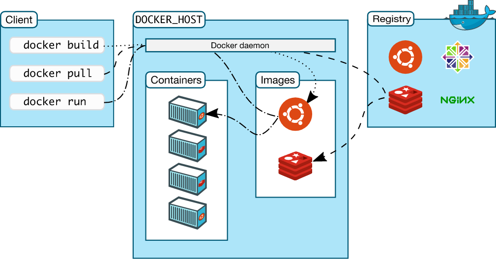

Docker学习（一）概述
Docker 是一个用于开发、发布和运行应用程序的开放平台。Docker 使您能够将应用程序与基础结构分离开来，从而可以快速交付软件。使用 Docker，您可以像管理应用程序一样管理基础结构。通过利用 Docker 的快速发布、测试和部署代码的方法，可以显著减少编写代码和在生产环境中运行代码之间的延迟。
🐳Docker官网
🐳官方文档
1. Docker平台
Docker 提供了在称为容器的松散隔离环境中打包和运行应用程序的能力。隔离和安全性允许您在给定的主机上同时运行多个容器。容器是轻量级的，包含运行应用程序所需的所有内容，因此不需要依赖于主机上当前安装的内容。您可以轻松地在工作时共享容器，并确保与您共享的每个人都使用相同的工作方式。
Docker提供了工具和平台来管理容器的生命周期:
- 使用容器开发应用程序及其支持组件；
- 容器成为分发和测试应用程序的单元；
- 准备就绪后，将应用程序部署到生产环境中，作为容器或已编排的服务。无论您的生产环境是本地数据中心、云提供商，还是两者的混合体，这都是一样的。
2. Docker可以做什么？
- 应用程序的快速、一致的交付
- 响应式部署和扩展
- 在同一个硬件上运行更多的工作负载
3. Docker体系结构
Docker 使用client-Server体系结构。Docker client与 Docker daemon进行对话，后者执行构建、运行和分发 Docker 容器的繁重工作。Docker client与 Docker daemon可以在同一个系统上运行，或者您可以将Docker client连接到远程Docker daemon。Docker client和Docker daemon使用 REST API、 UNIX 套接字或网络接口进行通信。另一个Docker client是 Docker Compose，它允许您处理由一组容器组成的应用程序。

3.1 Docker守护进程（Docker daemon）
Docker daemon(dockerd)监听 Docker API 请求并管理 Docker 对象，如镜像、容器、网络和数据卷（用于保存持久化数据）。守护进程还可以与其他守护进程通信，以管理 Docker 服务。
3.2 Docker客户端（Docker client）
Docker client(Docker)是许多 Docker 用户与 Docker 交互的主要方式。当您使用诸如 docker run 之类的命令时，客户端将这些命令发送给 dockerd，后者执行这些命令。Docker 命令使用 Docker API。Docker 客户端可以与多个守护进程通信。
3.3 Docker注册中心（Docker registries）
Dockerregistry 存储 Docker images。Docker Hub 是任何人都可以使用的公共注册中心，Docker 默认配置为在 Docker Hub 上查找镜像。你甚至可以运行自己的私人注册中心。
当您使用 docker pull 或 docker 运行命令时，所需的映像将从您配置的注册中心中提取出来。当您使用 docker push 命令时，您的映像将被推送到您配置的注册中心。
3.4 Docker对象（Docker objects）
当你使用 Docker 时，你正在创建和使用镜像、容器、网络、数据卷、插件和其他对象。
镜像（images)
镜像是一个只读模板，其中包含创建 Docker 容器的说明。通常，一个镜像基于另一个图像，并带有一些额外的定制。例如，你可以构建一个镜像基于 ubuntu 镜像，但是你也要安装Apache HTTP Server 和你的应用程序，以及运行你的应用程序所需的配置细节。
您可以创建自己的镜像，也可以只使用其他人创建并在注册表中发布的镜像。要构建您自己的镜像，您需要创建一个 Dockerfile，它使用一个简单的语法来定义创建映像和运行映像所需的步骤。Dockerfile 中的每条指令都在镜像中创建一个图层。当您更改 Dockerfile 并重新生成图像时，只会重新生成已更改的图层。与其他虚拟化技术相比，这是使镜像如此轻量化、小巧和快速的部分原因。
容器（Containers）
容器是镜像的可运行实例。您可以使用 Docker API 或 CLI 创建、启动、停止、移动或删除容器。您可以将容器连接到一个或多个网络，将存储器附加到容器上，甚至可以根据容器的当前状态创建新镜像。
默认情况下，容器与其他容器及其主机相对隔离较好。您可以控制容器的网络、存储或其他基础子系统与其他容器或主机的隔离程度。
容器是由其镜像以及创建或启动时提供给它的任何配置选项定义的。当一个容器被移除时，任何对其状态的更改，如果没有存储在持久性存储中的话，都会消失。
- 示例
docker run命令
当您运行此命令时，会发生以下情况(假设您使用的是默认注册中心配置) :$ docker run -i -t ubuntu /bin/bash
- 如果你本地没有 ubuntu 镜像，Docker 会从你配置的注册中心中提取它，就像你手动运行 docker pull ubuntu 一样。
- Docker 创建一个新容器，就像您已经手动运行了一个 docker container create命令一样。
- Docker 将一个读写文件系统分配给容器，作为它的最后一层。这允许正在运行的容器在其本地文件系统中创建或修改文件和目录。
- 由于您没有指定任何网络选项，因此 Docker 创建一个网络接口将容器连接到默认网络。这包括为容器分配一个 IP 地址。默认情况下，容器可以使用主机的网络连接连接到外部网络。
- Docker 启动容器并执行/bin/bash。因为容器是交互式运行的，并且连接到您的终端(由于-i 和-t 标志) ，所以您可以在将输出记录到终端的同时使用键盘提供输入。
- 当键入 exit 以终止/bin/bash 命令时，容器将停止，但不会被删除。你可以重新启动或者删除它。
4. Docker使用的基础技术
并利用 Linux 内核的几个特性来实现其功能。Docker 使用namespaces技术提供称为容器的隔离工作区。运行容器时，Docker 为该容器创建一组名称空间。
这些名称空间提供了一个隔离层。容器的每个方面都运行在一个单独的名称空间中，它的访问受到该名称空间的限制。